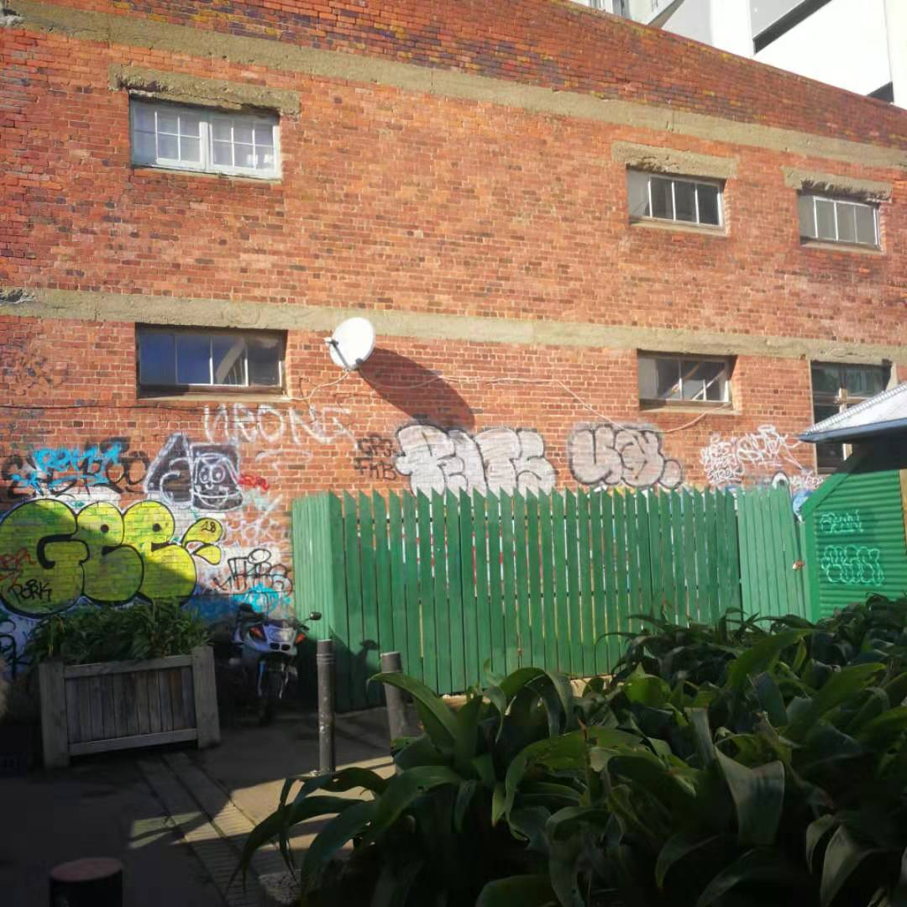
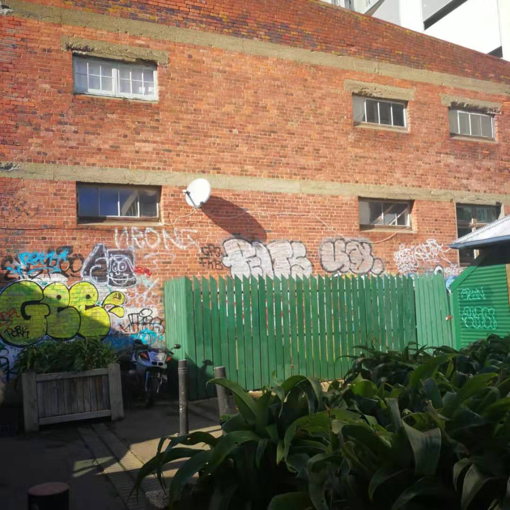
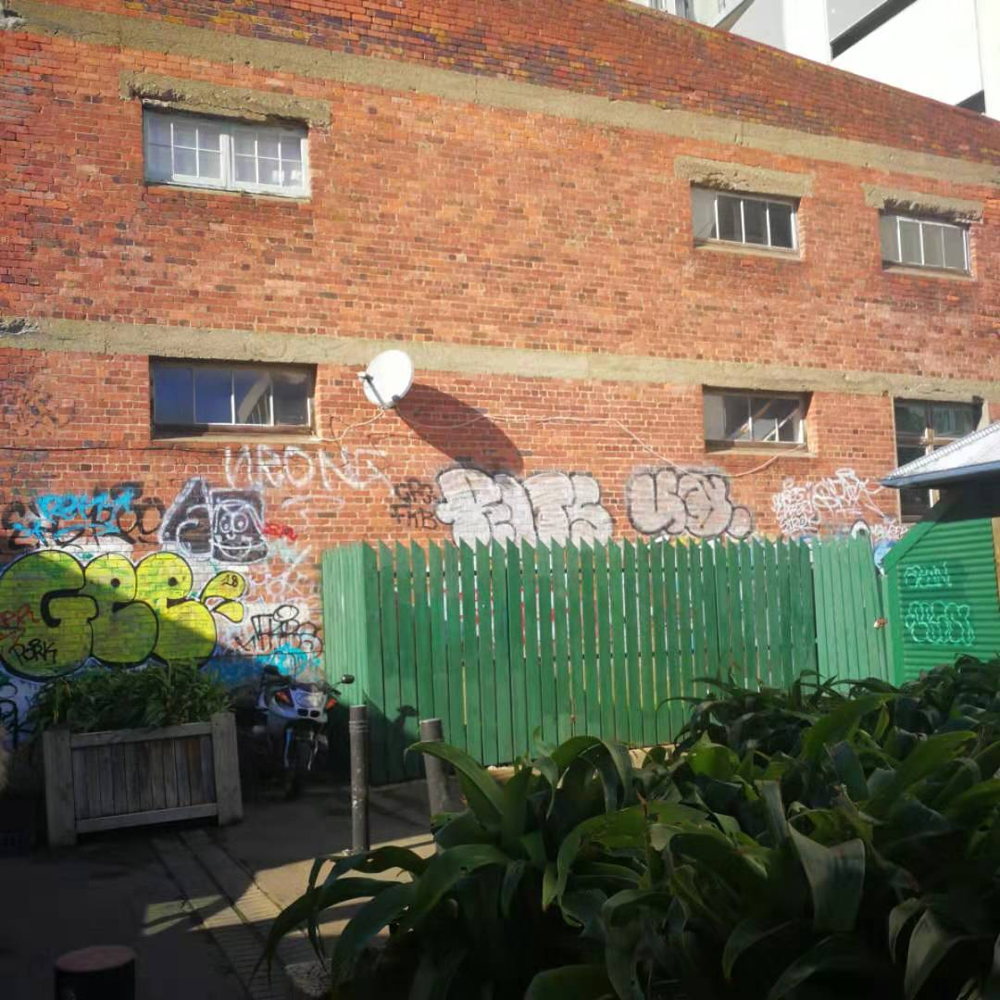

Wires
 

The networks is everywhere. Let's take a look at the Internet infrastructure in Wellington.
This website will introduce some types of infrastructure.
Smoke detector
Wires

Camera

Router

A router is a special computer device used for network interconnection. It plays an important role in network construction. The main function of the router is to find the correct path for the received message and forward it out.